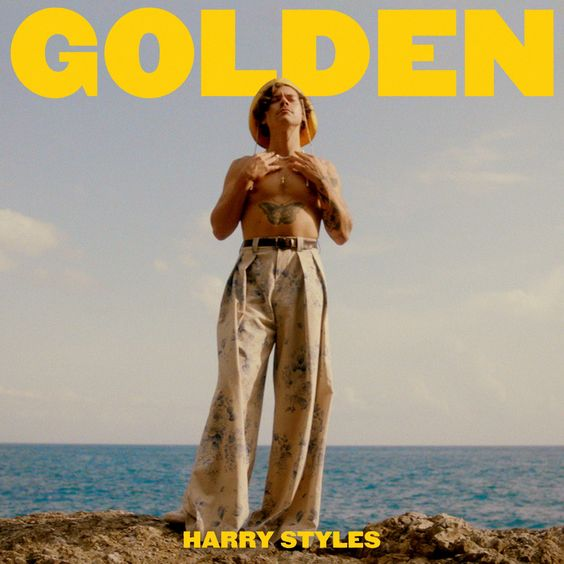
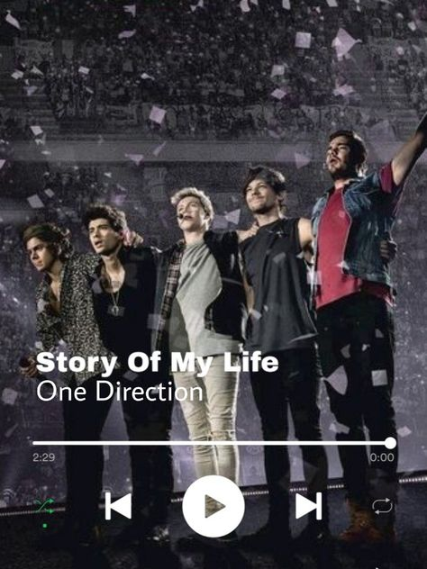
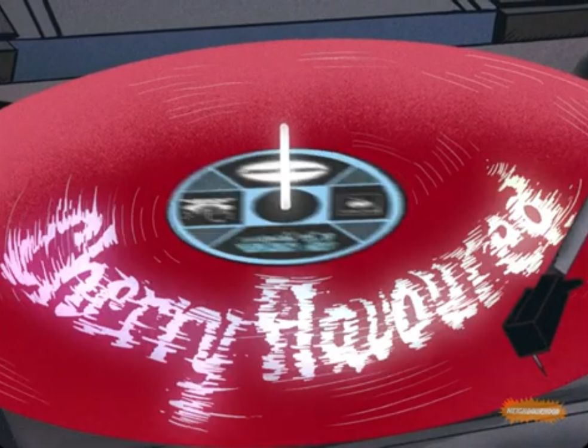
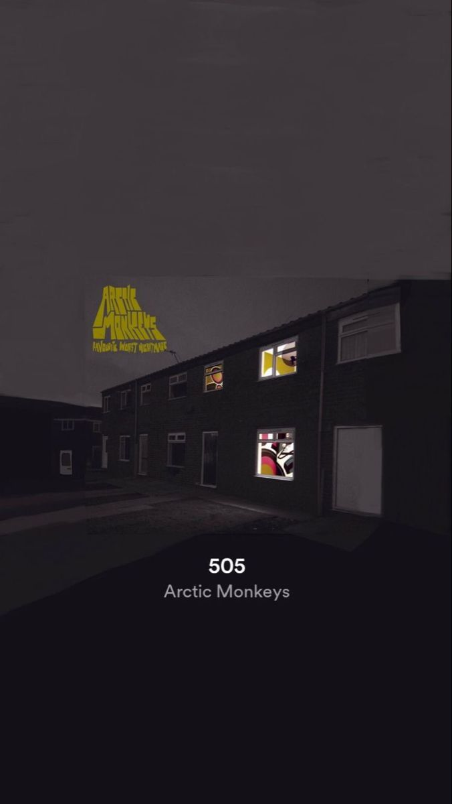
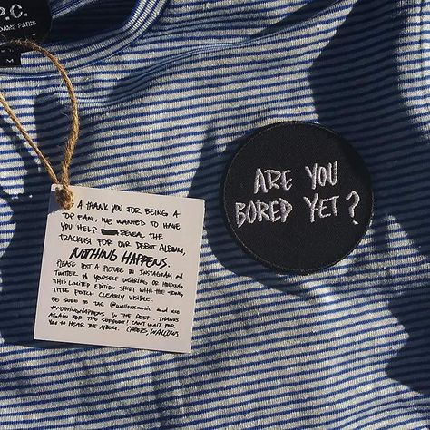

Welcome to my Top Pick songs.In this section,I'm going to list a few songs from a few of my favourite artists such as Harry Styles and Wallows.
There are 5 top pick songs that I choose.I chosed this songs to become top picks because it is the most played songs on my playlist
I usually played this songs when I do my assignment or art!
|  | Golden by Harry Styles Golden is a song by Harry Style from Fine Line album.It was released on 2019 while the music video just released a few months ago.Golden is about being vulnerable,being in love and moving on from a heartbreak.I love this song because the music is so good and it boost my mood. Golden on Youtube |
|  | Story of My Life by One Directon Story of my life is song by a famous band called One Direction.It was released on 28 October 2013.One Direction is my favorite band.This song is my comfort song whenever I miss One Direction.The lyric meaning in Story of my life is about someone who is giving everything into a relationship and he continues to try and keep pushing forward to make her happy. Story of My Life on Youtube |
|  | Cherry Flavoured by The Neighbourhood Cherry Flavoured is a song by The Neighbourhood.It was released this year.This song explained by fans that it is about what the singer felt through the lifetime as an artist.I love listening to this song when rain come because is somehow makes me feel New York City vibes. Cherry Flavoured on Youtube |
|  | 505 by Artic Monkey 505 by Artic Monkey is my favorite song all the time.It was released more than 10 years ago,which is on 2007.The genre of this song is indie rock.The meaning of the 505 has been debated among Artic Monkey's fan,either it is an apartment number or time.Based on the lyrics,this song is more likely about a guy who want back his girlfriend.I love this song because the music is really good and it really suit my music taste. 505 on Youtube |
|  | Are You Bored Yet? by Wallows ft Clairo Are you bored yet? is a song by Wallows with a collabration of Clairo.Both Wallows and Clairo are my favorite artist.This song was released on 2019.Are you bored yet? is about the idea of someone being bored with a relationship that you have been in for a while, and the fear that you or the other person is ready to move on.Because I'm into soft indie music,I always listen to this song and discover more song from the artist itself. Are You Bored Yet? on Youtube |